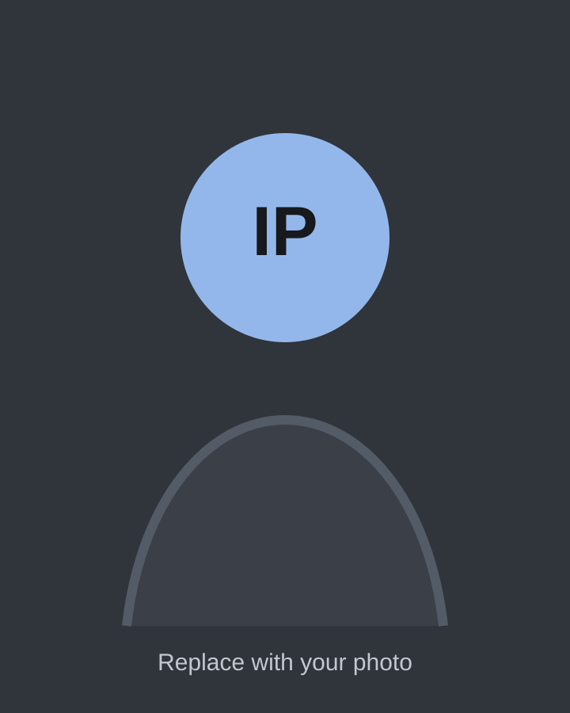

Engineering Portfolio
Isaac Prieto
Engineering student focused on research, systems thinking, and practical technical work that connects lab knowledge to useful outcomes.

Career Objective
To build a career at the intersection of research, engineering design, and resilient technology, contributing to projects where careful analysis, hands-on problem solving, and ethical judgment lead to measurable improvements in the real world.